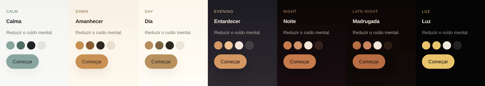
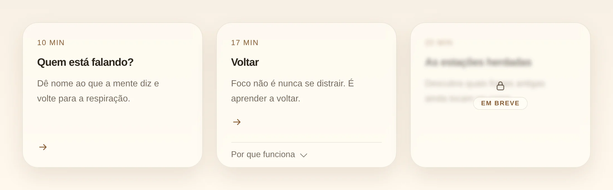
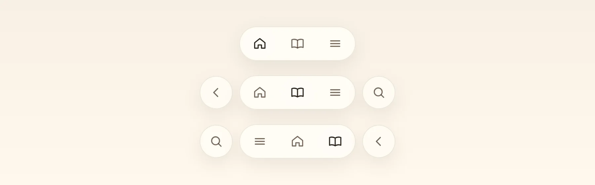
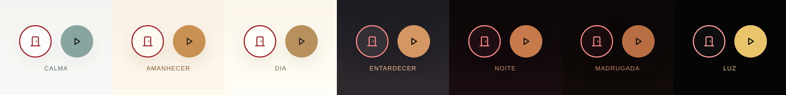

Design system do NeuroMedit
Uma fonte única de verdade para uma interface que acalma.
Criei o sistema visual do NeuroMedit, uma plataforma de meditação guiada com base em neurociência. Comecei por extrair os valores do código do site; depois inverti a direção: hoje o sistema é a referência e o site segue-o.
- 7temas, um para cada hora do dia
- 27tokens de cor, com uso escrito
- 9componentes documentados
- 10ícones com as mesmas regras de traço
Meu papel: todas as decisões de design, tokens, componentes e regras. Usei a IA (Claude) para extrair valores do código e escrever os componentes, e revi cada um.
Por que um design system num produto pequeno
A cada página nova, a interface mudava um pouco: outro tom de bege, outra sombra, outro raio de botão. Num produto que promete reduzir o ruído mental, a própria interface estava a criar ruído.
O sistema resolve isso com uma regra simples: nenhuma cor, sombra, raio ou duração solta numa tela. Se o valor não existe como token, a tela está a pedir uma adição ao sistema, não uma exceção.
Cinco princípios que decidem o resto
Uma ação óbvia por ecrã
Um só botão principal. Tudo o resto é secundário ou link.
O toque vive em baixo
Os controlos ficam na zona do polegar; o topo é para conteúdo.
A calma é demonstrada
As animações seguem a respiração; o texto acompanha em vez de mandar.
A ciência apoia
Primeiro o mecanismo no cérebro, depois a prática. Nunca a competir com ela.
O problema está nas pontas
A entrada e a saída de uma sessão são onde as pessoas se perdem.
Sete temas, os mesmos nomes
A interface segue a hora do dia: do amanhecer à madrugada, e uma versão Luz para a noite profunda. Os nomes dos tokens são sempre os mesmos (bg, text, accent…); só os valores mudam. Um componente desenhado uma vez funciona nos sete temas sem uma linha a mais.

Componentes com regras, não só com aparência
Cada componente tem um guia: quando usar, anatomia, estados, o que não fazer. Estes quatro mostram as decisões que mais pesaram.
Botões e chips
Sempre em pílula, com pelo menos 50px de altura para o toque. Três níveis claros: principal no acento, secundário só com borda, link em texto.
Cartão de sessão
Duração, título e uma frase. O "Por que funciona" abre a ciência só para quem a quer. As sessões que ainda não existem ficam desfocadas, com cadeado e "Em breve", em vez de desaparecer.

Navegação na zona do polegar
No telemóvel, uma barra em baixo com três destinos no máximo. Voltar e procurar ficam fora da pílula. Para quem usa a mão esquerda, a ordem espelha-se.

Sair com cara de saída
Sair de uma sessão tem de ser óbvio, mesmo para quem chega cansado. O botão Sair ganhou um ícone de porta e uma cor própria, só em contorno, ao lado do play. A cor passa 4,5:1 nos sete temas, e a forma da porta funciona mesmo sem ver a cor.

Como o sistema evolui
- Usar o que existe. Cores, tipografia, ícones, espaçamento, raios e movimento vêm dos tokens.
- Não inventar valores. Nada de cor ou sombra solta numa tela.
- Propor antes de usar. Algo novo entra primeiro no sistema, com o motivo, e só depois aparece numa tela.
- Proposta não é código. O que está decidido mas não implementado fica marcado como tal.
Quando o site e o sistema discordam, o sistema manda: a diferença vira tarefa para o site, não exceção no sistema. Foi assim que este portfólio nasceu do mesmo sistema antes de ganhar a sua própria identidade.
Acessibilidade escrita no sistema
- Contraste. Texto a 4,5:1. Cada token diz onde não pode ser usado (por exemplo,
text-mutedno tema Calma só em texto grande). - Foco visível em todos os controlos, com contorno em
accent-dark. - Movimento reduzido. Com
prefers-reduced-motion, tudo fica parado, incluindo a respiração do orbe. - Nunca só a cor. Sair leva sempre o ícone e o nome acessível "Sair".
Um sistema para a interface não mudar a cada criação nova.
Próximos passos: documentar o cabeçalho, o menu e o ecrã de feedback, e rever o hover dos botões nos temas claros, onde o contraste do texto ainda baixa.